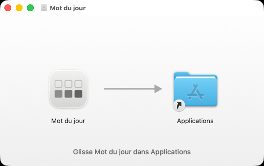
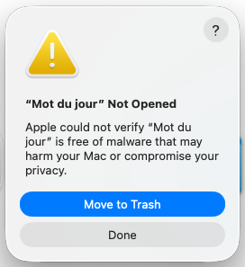
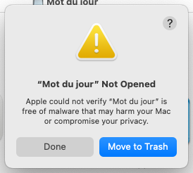
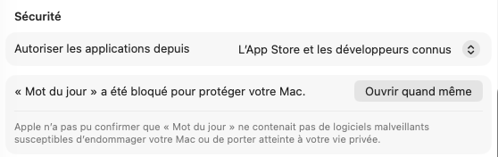
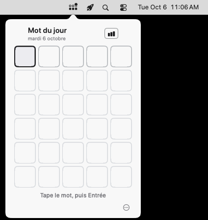

Mot du jour
Un mot de cinq lettres à trouver chaque jour, d'un clic sur une petite icône en haut à droite de ton Mac.
Télécharger Mot du jour1 Mo · pour Mac, macOS 12 ou plus récent · installation en deux minutes
1 Glisse-la dans Applications
Dans tes Téléchargements, double-clique sur Mot-du-jour.dmg. Une petite fenêtre s'ouvre : fais glisser Mot du jour sur le dossier Applications.

2 Ouvre-la
Ouvre le dossier Applications et double-clique sur Mot du jour. La première fois, ton Mac l'arrête : c'est normal, elle n'est pas vendue sur l'App Store.
Clique sur Terminé (ou OK) — surtout pas sur Placer dans la corbeille, même si c'est le bouton bleu.


Les photos viennent d'un Mac réglé en anglais ; sur le tien, la fenêtre est en français.
3 Autorise-la, une seule fois
Menu (en haut à gauche de l'écran) → Réglages Système → Confidentialité et sécurité. Descends jusqu'à Sécurité et clique sur Ouvrir quand même.

Ton Mac te demande ton mot de passe (ou ton doigt), puis une dernière confirmation : clique encore sur Ouvrir quand même. C'est la seule fois.
4 C'est prêt
L'icône apparaît en haut à droite de ton écran, et le panneau s'ouvre tout seul la première fois. Ensuite, un clic sur l'icône l'ouvre, un clic ailleurs le ferme.

Elle se rouvre toute seule à chaque démarrage du Mac, et se met à jour toute seule. Ton Mac peut afficher une notification « Éléments d'arrière-plan ajoutés » : c'est normal, c'est justement ce qui la fait revenir à chaque démarrage.
Comment jouer
- Tape un mot de cinq lettres au clavier, puis Entrée. Tu as six essais.
- A la lettre est dans le mot, à la bonne place.
- A la lettre est dans le mot, mais ailleurs.
- A la lettre n'est pas dans le mot.
- Un mot inconnu ne compte pas : la ligne tremble, tu retapes. Les accents s'enlèvent tout seuls.
- Un nouveau mot chaque jour à minuit ; un petit point sur l'icône te rappelle qu'il t'attend.
- Les flèches ‹ › à côté du titre : les jours passés, que tu peux rattraper.
- Le petit graphique : tes statistiques (série, record, répartition).
- Clic droit sur l'icône : les réglages (ouverture au démarrage, mise à jour, quitter).
Un souci ?
Je ne vois pas l'icône en haut à droite
Si ta barre est très remplie (surtout sur un MacBook à encoche), l'icône peut être cachée. Rouvre Mot du jour depuis Applications : le panneau s'ouvre quand même. Sur macOS 26, regarde aussi Réglages Système → Barre des menus : Mot du jour doit y être autorisée.
Le panneau me dit « Range-moi dans Applications »
Tu l'as ouverte directement depuis le fichier téléchargé : elle marche, mais ne restera pas. Fais l'étape 1 (glisse-la dans Applications), puis rouvre-la depuis Applications.
Mon Mac est plus ancien (macOS 14 ou avant)
À l'étape 2, l'avertissement n'a qu'un bouton OK : clique dessus, puis fais l'étape 3 comme indiqué. Autre chemin : un clic droit sur Mot du jour dans Applications → Ouvrir → Ouvrir.
J'ai cliqué sur « Placer dans la corbeille »
Pas grave : retélécharge-la avec le bouton tout en haut et recommence à l'étape 1.